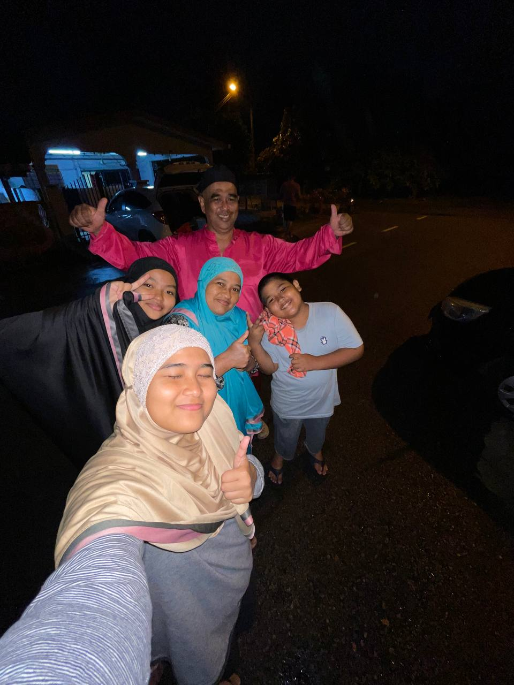
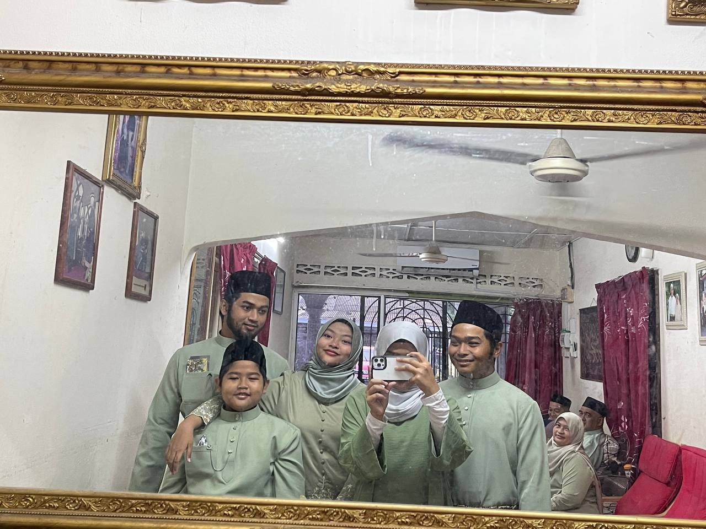

ATHIRAH'S FAMILY




My family consists of seven members, and I am the middle child among my siblings.
I have two older brothers, who are always there to guide and support me,
and two younger siblings a sister and a brother who bring endless joy to our household.
We live together in Bangi, Selangor, where we share a warm and loving home filled with
laughter and togetherness. Our family values the bond we share,
and my parents have instilled in us the importance of love and respect for one another.
Despite our busy lives, we always find time to connect and create happy memories.
My father is the cornerstone of our family,
working tirelessly to provide for us and ensuring we never go without.
He makes sure there is always food on the table, a reflection of his dedication and care.
Although we live in Selangor, our roots are in Malacca,
and we often cherish stories of our hometown during family gatherings.
One of our cherished traditions is watching movies together every Friday.
It’s a time for us to relax and enjoy each other's company,
strengthening the bond we share as a family.
My Grandmother

My grandmother, my one and only nenek in the world,
holds a special place in my heart. During my childhood,
I would often stay at her house, and those memories are some of the happiest of my life.
She would take me out on little trips, care for me whenever I was sick,
and spoil me by buying whatever I wanted. Her love was unconditional,
and her pride in her grandchildren's achievements always shone brightly.
Even during my school days, she would slip me pocket money,
making sure I had everything I needed. While she might seem strict on the outside,
to us, she is the most loving and caring person, always putting her family first.
For me, life wouldn’t be the same without nenek.
She is not only a source of comfort but also a guiding figure who has shaped who I am today.
Her support and love are unwavering, and she always reminds me of the importance of family
and hard work. After my parents, nenek is the second most important person in my life.
Her presence makes life brighter, and I am truly grateful to have her as my grandmother.
She is a true pillar of our family, someone we all love and cherish deeply.
My brothers

I have two older brothers, and we’ve been very close since childhood.
Our bond grew strong because I had no younger siblings for a long time,
and the age gap made me rely on them a lot. They have always been there for me,
whether to give advice or simply to be someone I can talk to.
They are also my reliable “drivers,” taking me anywhere I need to go.
Even though they are sometimes busy with their own lives,
they always make time for me and our family.
Both of my brothers are still single and very generous.
Whenever they have extra money, they often treat us to meals,
making every moment together special. Their caring and thoughtful nature make me feel
loved and protected. Having them in my life is such a blessing, and I am truly grateful
for their love and support. They are not just brothers but also an important part of my happiness.
My sister

My younger sister is the only sister I have, and she means so much to me.
Growing up, we used to fight a lot, as siblings often do, but as we got older,
we became more mature and much closer. She is now my closest companion in the family,
someone I can trust and rely on. Whether it’s going out together or
simply spending time at home, she’s always by my side.
She even taught me how to do makeup, and I’m grateful to learn from her skills and creativity.
One thing about her is that she loves borrowing my clothes and shoes,
often without asking first! Even though it can be annoying sometimes,
I know it’s just her way of connecting with me. As she prepares for her SPM,
I want her to know that I believe in her. She’s smart and capable, and I’m confident
she’ll do great. No matter what, I’ll always be here cheering her on and supporting her dreams.
My baby brother

My younger brother is someone I’ve always wished for, even before he was born.
Having him in my life feels like a dream come true. He has a cheerful and lively
personality that lights up the room, making it impossible to feel bored when he’s around.
One of his favorite hobbies is fishing, and he’s really passionate about it.
Although I don’t share the same interest, I love hearing his fishing stories and seeing
how much joy it brings him.
He’s also my late-night companion when I feel like watching TV.
Whether it’s a movie or a random show, he’s always there to join me,
making those moments even more enjoyable. His positive energy and sense of humor
are things I cherish the most about him. Having him around makes our family
life even more vibrant, and I’m grateful for all the special moments we share.
back to top